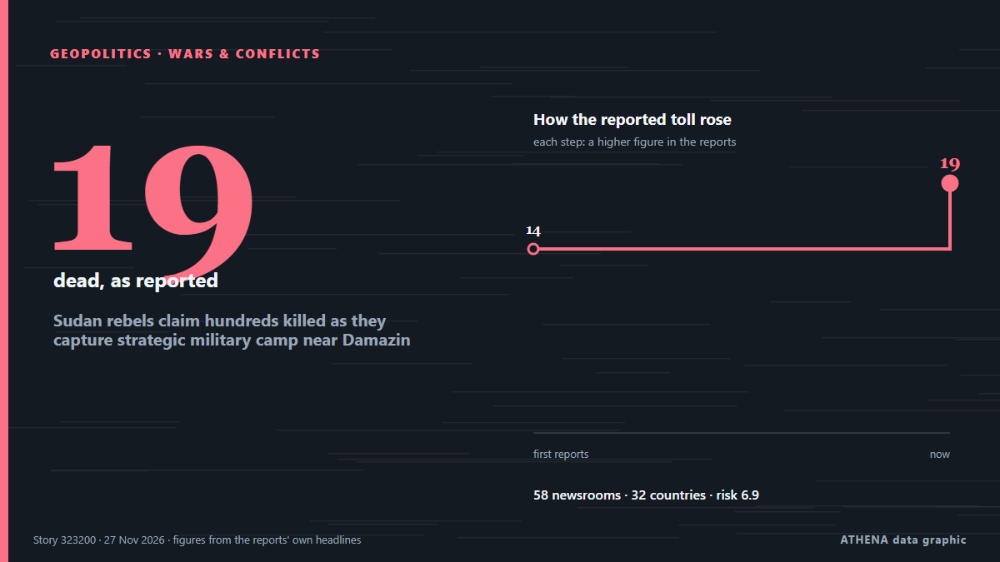

Sudan rebels claim hundreds killed as they capture strategic military camp near Damazin

Sudan's Tasis forces claimed that hundreds were killed or wounded as they captured Maqanza military camp in Blue Nile, advancing towards Damazin. de Tuko
Ce qui a changé 5 nouveaux reportages de 5 médias ces 24 dernières heures.
Voir les sources ›Preuves: Limitées
Relayé de façon indépendante par 57 médias dans 32 pays depuis le 17 nov. ; premier à l'annoncer : IranWire ; la couverture faiblit. ATHENA juge le risque élevé (6.9/10), surtout en raison de la gravité des dommages décrits et de sa portée géographique et sectorielle. La confiance est de 64 % (modérée) : 57 médias indépendants le confirment, avec une fiabilité moyenne des sources de 76 %. Médias par pays : Territoires palestiniens (5), Soudan du Sud (3), Pakistan (3). Couverture : du 17 nov. au 27 nov., 246 heures.
Pourquoi c'est important: Ce suivi couvre le conflit qui concerne Israël, Gaza, la Cisjordanie et le Liban — faits militaires, situation humanitaire et diplomatie — tel que le couvre la presse du monde entier.
Ce qui a changé : 5 nouveaux articles de 5 rédactions dans les 24 heures jusqu'au 28 nov..
Premier titre : Sudan war: Tasis forces claim capture of Suda base in latest Blue Nile advance
AutomatiséSélectionné, regroupé et noté selon la méthode publiée d'ATHENA à partir de 33 médias indépendants. Le titre est celui du média ; les phrases d'ATHENA suivent des modèles fixes - aucune IA générative ne les rédige. Comment ça marche →
Comment lire cette page
- Ce que vous lisez
- 57 médias dans 32 pays ont rapporté cet événement. Les reportages ci-dessous sont classés selon leur ordre de parution ; chaque titre ouvre l'article original. ATHENA n'écrit aucun reportage.
- Notre lecture
- Pour mémoire — Les reportages décrivent une affaire terminée, intérieure, commerciale ou personnelle. Nous la consignons pour que vous voyiez qui l'a rapportée et quand. Nous ne suivons pas ici de risque de conflit plus large.
- Quelle base de preuves
- Limitée Considérez cette page comme un premier compte rendu.
Après retrait des doublons, des éléments hors sujet et périmés, 13 des 40 reportages listés sont retenus ; 38 % des titres correspondent à l'événement.
- Ce que cela ne veut pas dire
- ATHENA mesure la façon dont un événement est rapporté, pas sa véracité. Ce n'est ni une prévision, ni un jugement sur qui a raison, ni un conseil.
- Ce qui la changerait
- Des reportages d'autres médias indépendants montrant une évolution différente, ou une confirmation ou un démenti ferme d'une source officielle.
Lecture R2 · actualisée à chaque mise à jour de cette page. ATHENA n'a pas encore publié de bilan de ces lectures ; il sera lié ici le moment venu.
En un coup d'œil
Sélectionné, noté et rédigé par la méthodologie publiée d'ATHENA. Aucun rédacteur n'intervient sur un événement en particulier. Comment il est produit ›
| 17 Nov 13:45 UTC | 1 |
|---|---|
| 18 Nov 01:45 UTC | 0 |
| 18 Nov 13:45 UTC | 0 |
| 19 Nov 01:45 UTC | 0 |
| 19 Nov 13:45 UTC | 0 |
| 20 Nov 01:45 UTC | 0 |
| 20 Nov 13:45 UTC | 0 |
| 21 Nov 01:45 UTC | 0 |
| 21 Nov 13:45 UTC | 0 |
| 22 Nov 01:45 UTC | 0 |
| 22 Nov 13:45 UTC | 0 |
| 23 Nov 01:45 UTC | 0 |
| 23 Nov 13:45 UTC | 0 |
| 24 Nov 01:45 UTC | 5 |
| 24 Nov 13:45 UTC | 9 |
| 25 Nov 01:45 UTC | 25 |
| 25 Nov 13:45 UTC | 18 |
| 26 Nov 01:45 UTC | 25 |
| 26 Nov 13:45 UTC | 19 |
| 27 Nov 01:45 UTC | 8 |
| 27 Nov 13:45 UTC | 2 |
| 28 Nov 01:45 UTC | 1 |
| 26 Nov 15:04 UTC | 6.7 |
|---|---|
| 26 Nov 21:52 UTC | 7.5 |
| 28 Nov 07:57 UTC | 6.9 |
Pourquoi ces chiffres
Importance
L'ampleur et la visibilité de la couverture de l'information.
Risque
Ce que décrivent les reportages, noté selon le dommage possible. Ce n'est pas une prévision.
Confiance
Dans quelle mesure des médias indépendants étayent l'information.
Affiché : 64 % (calculé : 90 %) - les preuves sont limitées, la confiance est donc maintenue à modérée.
La couverture : qui l'a annoncé, et quand
titre tel que publié · ouvre l'original- IranWire · IranTehran City Council Insists on Keeping Surveillance Cameras Despite Reports of Israeli Infiltration
- Radio Tamazuj · Soudan du SudAnalyst: Resources, supply lines reshape Sudan’s balance of war
- Middle East Monitor · Territoires palestiniensRed Cross: Gaza urgently needs more durable shelter solutions
- Citizen Digital · KenyaSudan war: Tasis forces claim capture of Suda base in latest Blue Nile advance
- Dawn · PakistanEight killed, seven injured as passenger vehicle plunges into ravine in KP's Torghar
- NDTV · IndeMan Strangles UP Woman For Rejecting Advances, Kills Her Grandson Too
- IRNA (English) · IranTehran’s transport expansion continues despite US-Israeli attacks: Official
- Middle East Monitor · Territoires palestiniensMacklemore turns Gaza grief into song supporting Palestinian mothers and children
- Sudans Post · Soudan du SudRebel coalition claims capture of Suda military camp in Sudan’s Blue Nile
- The New Arab · INTParis to honour Gaza's Hind Rajab with walkway in her name
- The Irish News (Belfast) · Royaume-UniCoroner acted unlawfully in finding use of force by paratrooper who killed 14-year-old boy not justified, court hears
- EUobserver · BelgiqueFrom strip searches to stillbirths: how Gaza’s women are being broken by Israel’s offensive
- The Jerusalem Post · IsraëlNo withdrawal, no rebuilding in Hamas-controlled Gaza sectors, Katz says in opposition to BoP
- The National · Émirats arabes unisUK Foreign Secretary condemns Israel's ‘horrifying’ Gaza blockade as ‘collective punishment’ for Palestinians
- Amnesty International · Royaume-UniIsrael/OPT: Women and girls bear the crushing toll of Israel’s ongoing genocide in Gaza
- Anadolu Agency (English) · TurquieStorm threatens lives of 1.76 million Palestinians sheltering in tents: Gaza media office
- Express Tribune · PakistanIsraeli airstrike kills four members of Palestinian family in latest Gaza ceasefire violation
- Eye Radio · Soudan du SudSudan: Drone strike kills 10-year-old boy as he prepares for school in Omdurman
- ReliefWeb (UN OCHA) · INTSudan: Drone strike kills 10-year-old pupil attending NRC-supported school in attack on family home
- Asharq Al-Awsat (English) · Arabie saouditeNew Defections Among Ranks of Sudan’s Rapid Support Forces
- Al Jazeera English · QatarSentences served, but Gaza prisoners remain behind Israeli bars
- NDTV World · IndePalestinians In Gaza Line Tents With Sandbags To Counter Israeli Bullets
- ReliefWeb (UN OCHA) · INTSudan: INGOs Call for protection of civilians and humanitarian operations following drone strikes in Nyala and Khartoum
- ReliefWeb (UN OCHA) · INToPt: Gaza: Basic winter survival items out of reach for families | NRC
- TRT World · TurquieIsraeli strike kills four members of Palestinian family in Gaza in latest ceasefire violation
- Middle East Monitor · Territoires palestiniensEgypt and Sudan agree to defend their water rights on the Nile
- Nile Post · OugandaNile Special Says Ready to Honour Shs100m Pledge for African Games Rugby Champions
- Middle East Monitor · Territoires palestiniensBarghouti: Israeli pollution in Gaza threatens Palestinian lives for decades
- Egypt Independent · ÉgypteCairo, Khartoum reaffirm commitment to restoring stability, reject threats to Sudan’s unity
- The Straits Times · SingapourDrone strikes kill 19 civilians in southeastern Sudan, says rights group
- Egyptian Streets · ÉgypteEgypt Vows to Defend Sudan Under 1976 Joint Defence Pact
- Asharq Al-Awsat (English) · Arabie saouditeDrone Strikes Kill 19 Civilians in Southeastern Sudan
- JNS · IsraëlProtesters briefly disrupt Israeli conductor's Brussels concert
- Middle East Eye · INTAmnesty says Palestinian women and girls bear crushing toll of Israel’s genocide
- UN News · États-UnisGaza’s widows raise their families alone: ‘We do our duties twice over, but where are our rights?’
- ARY News · PakistanBetween hope and grief, Palestinian families wait for sons’ bodies
- Jordan News · JordanieFour Members of One Family Martyred in Gaza Strike
- Middle East Monitor · Territoires palestiniensPalestinian Government warns of continued displacement of more than 40,000 Palestinians in northern West Bank
- The Bahamas Tribune · BahamasCop kills himself in front of students
- Tuko · KenyaSudan rebels claim hundreds killed as they capture strategic military camp near Damazin